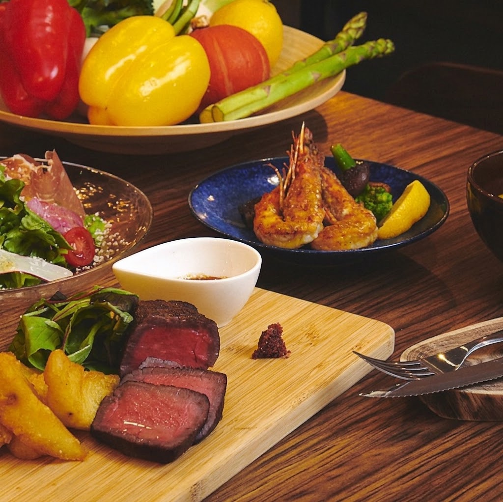
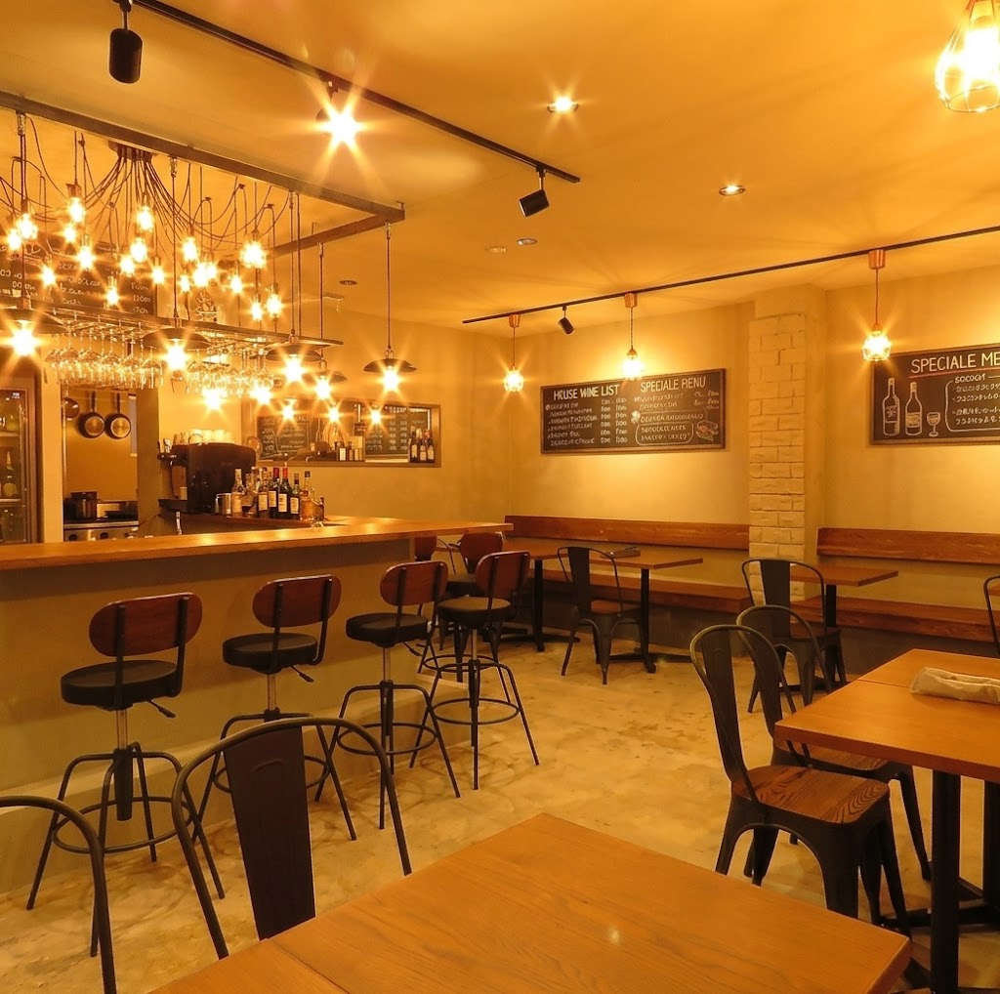

★★★★
5500円の飲み放題付きコースを頂きました。とても雰囲気と店員さんの対応が良い気持ちの良い空間でしたし、お料理も前菜とパスタは絶品でした。（中略）ただ、ボリュームは女子向けに近いので腹ペコ男子は物足りなく感じるかもしれません。

盛岡の路地裏にひっそりと佇む、ブラッスリー。オーナーシェフが旬の素材を生かして仕立てる料理を、気軽な雰囲気の中でゆっくりお楽しみいただけます。
岩手県産の豚肉や季節の地元食材を積極的に取り入れ、地域とつながるフレンチビストロを目指しています。
旬の素材を生かした料理と、シェフの人柄が伝わる温かなサービスが魅力です。
ご来店の95%の方から「素晴らしい接客・サービス」とご評価いただいています。
93%の方が料理の味に満足とご回答。地元食材や季節の食材を使ったメニューが好評です。
料理に合わせて選べる、豊富なワインとカクテルをご用意しています。
女性のお客様が多く、華やかで賑やかな雰囲気。友人同士やデートにも使いやすいお店です。
気軽に入れて、料理もお酒もしっかり楽しめます。
デザートプレートのご用意やサプライズにも対応します。
貸切のご相談を承ります。飲み放題プランもあります。
24時間、お好きなタイミングでご予約いただけます。

盛岡の『Comfort Dining DADA』で野崎正孝シェフの右腕として修行を積み、オープンからスーシェフとして多くのゲストの満足に貢献してきました。
長年培った経験を活かし、2020年3月末に同店を卒業。レセプション開催後に新型コロナウイルスの影響で開店の延期を余儀なくされましたが、緊急事態宣言の解除後にオープンしました。
自分の料理とサービスを通じて、カジュアルで温かいフレンチをもっと身近にしたい。
素材の味わいと自らの人柄を大切に、「盛岡の隠れ家フレンチ」として親しまれています。
5500円の飲み放題付きコースを頂きました。とても雰囲気と店員さんの対応が良い気持ちの良い空間でしたし、お料理も前菜とパスタは絶品でした。（中略）ただ、ボリュームは女子向けに近いので腹ペコ男子は物足りなく感じるかもしれません。
久し振りの来店でしたが、半年の変化に驚く程美味しかったです。サーモンのレアカツもグリルドパテもお任せパスタもペパロニピザも白ワイン煮込みのチキンも、注文した全てが美味しく、丁度良い温度で提供されます。（中略）遠方からですが、またすぐに食べに行きたいと思います。
※ご来店いただいたお客様の口コミ（一部抜粋）です。
選べる盛り合わせと本日のパスタ、ドリンクをセットにした、記念日や女子会向けのプランを準備しています。詳細が決まり次第、こちらでお知らせします。
| 店名 | BRASSERIE Bord de mer（ブラッスリー ボール ド メール） |
|---|---|
| 住所 | 〒020-0024 岩手県盛岡市菜園１丁目１１−１７ 小笠原ビル 1F |
| 電話番号 | 019-601-6702 |
| 定休日 | 月曜日 |
| 予約 | ホットペッパーグルメ（ネット予約） |
| SNS | InstagramFacebook |